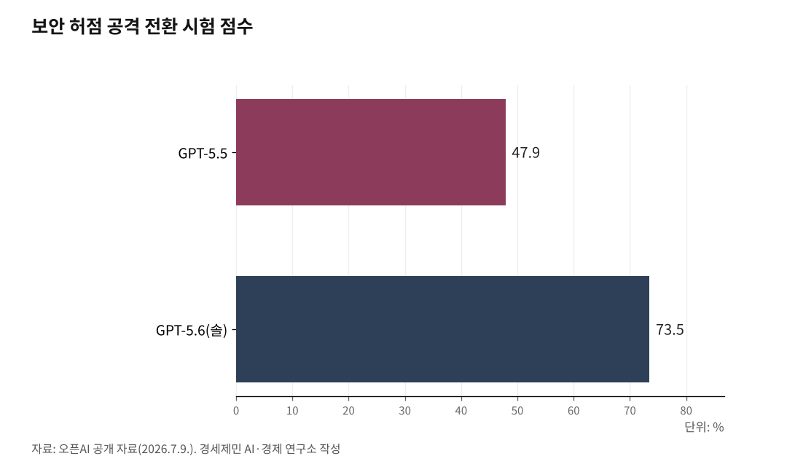

[주간 AI 동향] '세계 AI 지배' 선언한 미국…강한 AI, 출시부터 통제
GPT-5.6, 정부 검토 거쳐 공개…앤스로픽엔 수출통제로 빗장
한국도 사정권…독자 모델·국제협력으로 'AI 자주권' 대응
AI경세제민=김갑봉 기자 | 오픈AI의 새 인공지능(AI) 모델 '지피티(GPT)-5.6'이 지난 7월 9일 미국 정부 심사를 거쳐 공개됐다. GPT-5.6 하나만이 아니라 경쟁사 앤스로픽의 클로드도 같은 통제를 거쳤다.
이제 미국에서 가장 강한 AI는 정부의 손을 거쳐야 세상에 나온다.
미국이 강한 AI를 안보 문제로 다루기 시작했다는 뜻이다. 그리고 그 빗장은 한국 같은 나라에도 미친다. 우리가 최신 AI를 쓰고, 나아가 스스로 만들 수 있느냐는 물음으로 이어진다.
정부 검토 거쳐 공개됐다
트럼프 대통령은 6월 2일 AI 사이버보안 행정명령에 서명했다. 사이버 능력이 강한 AI는 일반에 풀기 30일 전 정부와 먼저 공유하라는 내용이다.
오픈AI는 6월 말 이 모델을 정부가 승인한 곳에만 먼저 열었다. 상무부 'AI 표준·혁신 센터'가 추가 시험을 맡았고, 이를 거쳐 7월 9일 일반에 공개됐다.
행정명령은 강제가 아니라고 스스로 밝혔다. 정부의 강제 허가나 사전승인 요건을 만드는 것이 아니라는 문구를 넣었다. 오픈AI는 요청에 따랐을 뿐이다. 트럼프 행정부가 6월 초 세운 이 틀이 실제로 처음 작동한 사례다.

빗장 이유는 해킹 능력
정부가 주목한 것은 이 모델의 사이버 공격 실력이다. 오픈AI는 성능이 가장 높은 '솔(Sol)'을 지금까지 자사 모델 가운데 가장 강한 보안 모델이라고 밝혔다.
보안 허점을 찾아 실제 공격으로 만드는 시험에서 솔은 73.5%를 받았다. 직전 모델 GPT-5.5의 47.9%를 크게 앞섰다. 해킹 실력을 겨루는 다른 시험에서는 96.7%를 받았다. 오픈AI가 7월 9일 함께 공개한 자료다.
오픈AI는 솔을 회사 기준 사이버 위험 '높음' 단계로 분류했다. 가장 위태로운 '심각' 단계는 넘지 않았다고 밝혔다. 9월 1일부터는 물리 보안키를 갖춘 이용자만 가장 위험한 기능을 쓸 수 있다.
오픈AI는 공개 전 자동 안전 시험에만 엔비디아 A100 그래픽카드 약 70만 시간어치를 썼다.
같은 능력은 방어에도 쓰인다. 오픈AI는 솔이 공격보다 약점을 찾아 고치는 데 더 낫다고 밝혔다.
성능은 클로드와 접전이다
미국이 틀어쥔 '최강 AI'가 오픈AI 하나만은 아니다. 성능만 보면 앤스로픽의 클로드가 오히려 앞서기도 한다.
오픈AI가 낸 자료에서도 그렇다. 여러 시험을 묶은 종합 지능 점수에서 솔은 58.9점, 클로드는 59.9점으로 클로드가 근소하게 앞섰다.
대표 코딩 시험인 'SWE벤치 프로'에서는 솔이 64.6%, 클로드가 80% 안팎으로 클로드가 크게 앞섰다. 시험마다 이기는 쪽이 갈린다.
실제 쓰임도 갈린다. 시장조사기업 센서타워 집계로 2026년 5월 챗GPT의 세계 AI 비서 점유율은 46.4%다. 일반 대중은 챗GPT를 가장 많이 쓴다.
반면 기업이 쓰는 돈에서는 2025년 앤스로픽이 40%로 오픈AI의 27%를 앞섰다. 멘로벤처스 자료다.
목표는 '세계 AI 지배'
미국의 속내는 안전만이 아니다. 백악관은 이번 행정명령을 알리며 목표를 "미국이 AI 세계 선두를 지키는 것"이라고 못 박았다. "세계를 계속 지배한다"는 표현도 함께 썼다.
말만이 아니다. 성능이 앞선 클로드도 예외가 아니었다. 미국은 앤스로픽의 최신 모델 페이블5에 수출통제를 걸어 접근을 아예 끊었다. 수출통제는 자발이 아니라 강제다.
트럼프 행정부는 미국 AI를 동맹국에 수출하는 것도 패권 전략으로 내걸어 왔다. 강한 것은 틀어쥐고, 나머지는 미국 표준으로 퍼뜨리는 두 갈래다.
자발적 사전검토와 강제적 수출통제. 미국은 두 손으로 가장 강한 AI를 사실상 틀어쥐었다.
한국, 독자 모델로 대응
강제의 칼끝은 외국을 향했다. 미국 정부는 앤스로픽에 "외국 국적자 전체가 쓰지 못하게 하라"고 명령했고, 앤스로픽은 최신 클로드를 한때 닫았다. 한국인도 그 '외국 국적자'다.
한국은 아직 남의 힘에 기댄다. 정부는 엔비디아 그래픽카드 26만 장을 들여오고, SK그룹은 아마존과 손잡고 대형 데이터센터를 짓는다. 빗장이 걸리면 최신·최강 AI를 쓸 수 있느냐가 미국 안보정책에 달린다.
그래서 한국은 제 모델을 만든다. 과기정통부는 2025년 8월 '독자 AI 파운데이션 모델' 사업을 시작해 정예 5개 팀을 뽑았다. LG AI연구원, SK텔레콤, 네이버클라우드, 업스테이지 등이 참여한다.
과기정통부 김경만 인공지능정책실장은 지난 2월 20일 브리핑에서 취지를 밝혔다. 한국이 독자 AI를 개발해 국방과 안보에서 자주권을 확보하려는 것이라고 설명했다.
이 사업은 이재명 정부의 '모두를 위한 AI' 정책의 한 축이자, 세계 3대 AI 강국이라는 목표의 발판이다.
한국은 밖으로도 손을 넓힌다. 정부는 지난 5월 세계보건기구와 세계은행 등 국제기구·개발은행 열네 곳과 '글로벌 AI 허브'를 세우기로 했다. 7월 15일에는 60여 개국 외교단에 이 구상을 알렸다.
허브의 깃발은 '모두를 위한 AI, 인류 난제를 푸는 AI'다. 미국과 중국의 패권 경쟁과는 다른 길이다.
남의 최강 AI에 기댈 것인가, 우리 모델을 키우고 뜻 맞는 나라와 새 길을 열 것인가. 그 선택에 이른바 K(케이) AI의 앞날이 달렸다.
참고문헌
· 「GPT-5.6: Frontier intelligence that scales with your ambition」, OpenAI, 2026.7.9., https://openai.com/index/gpt-5-6/
· 「GPT-5.6 System Card」, OpenAI Deployment Safety Hub, 2026., https://deploymentsafety.openai.com/gpt-5-6
· 「Fact Sheet: President Donald J. Trump Promotes Advanced Artificial Intelligence Innovation and Security」, The White House, 2026.6.2., https://www.whitehouse.gov/fact-sheets/2026/06/fact-sheet-president-donald-j-trump-promotes-advanced-artificial-intelligence-innovation-and-security/
· 「OpenAI gets permission to roll out GPT-5.6 to the public on July 9」, Mariella Moon, Engadget, 2026.7.8., https://www.engadget.com/2210308/openai-rolls-out-gpt5-6-july-9/
· 「Trump's AI export strategy runs into Trump's export controls」, Axios, 2026.6.16., https://www.axios.com/2026/06/16/trump-ai-export-strategy-export-control
· 「독자AI파운데이션모델 추가 발표」, 김경만 과기정통부 인공지능정책실장, 대한민국 정책브리핑, 2026.2.20., https://www.korea.kr/briefing/policyBriefingView.do?newsId=156745273
· 「State of AI 2026」, Sensor Tower, 2026., https://sensortower.com/blog/state-of-ai-2026
· 「2025: The State of Generative AI in the Enterprise」, Menlo Ventures, 2025., https://menlovc.com/perspective/2025-the-state-of-generative-ai-in-the-enterprise/
· 「South Korea's AI revolution is forcing a US–China balancing act」, Afeeya Akhand, East Asia Forum, 2026.1.17., https://eastasiaforum.org/2026/01/17/south-koreas-ai-revolution-is-forcing-a-us-china-balancing-act/
· 「정부, 주한 외교단에 '글로벌 AI 허브' 합동 브리핑…60여개국 참석」, 뉴스핌, 2026.7.15., https://www.newspim.com/news/view/20260715001393
※ 이 글은 AI 프로그램 클로드를 활용해 작성했습니다.
사진 출처
· [대표사진] United_States_Capitol_-_west_front.jpg: Architect of the, "United States Capitol west front edit2.jpg", 위키미디어 공용, 퍼블릭 도메인, https://commons.wikimedia.org/wiki/File:United_States_Capitol_west_front_edit2.jpg
※ 이 기사는 인공지능을 활용해 작성했습니다.
관련기사
- [AI동향] 정부 AI 예산 9조9000억원, 어디에 쓰이나
- [AI동향] 유엔, AI 함께 다스릴 틀 제네바서 첫 가동
- [AI동향] AI 투자, 반도체와 데이터센터로 몰린다
- [AI동향] 중국은 모델을 열고, 한국은 반도체를 묶어 판다
저작권자 © AI경세제민 무단전재 및 재배포, AI학습 및 활용 금지